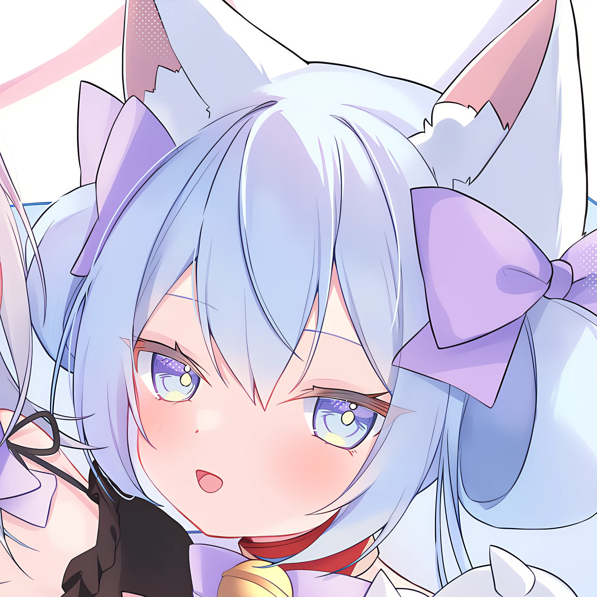

<!DOCTYPE html>
<html lang="zh-CN">
<head>
  <meta charset="UTF-8" />
  <meta name="viewport" content="width=device-width, initial-scale=1.0" />
  <title>Fun10165</title>
  <meta
    name="description"
    content="Fun10165 — Rust PL, HPC, AI Infra. 哈尔滨工业大学（深圳）."
  />
  <link rel="preconnect" href="https://fonts.googleapis.com" />
  <link rel="preconnect" href="https://fonts.gstatic.com" crossorigin />
  <link
    href="https://fonts.googleapis.com/css2?family=DM+Serif+Display:ital@0;1&family=IBM+Plex+Sans:wght@400;500;600;700&display=swap"
    rel="stylesheet"
  />
  <script src="https://unpkg.com/vue@3/dist/vue.global.prod.js"></script>
  <style>
    :root {
      --bg: #f4efe3;
      --paper: rgba(255, 251, 244, 0.8);
      --panel: rgba(46, 62, 79, 0.92);
      --panel-soft: rgba(46, 62, 79, 0.78);
      --text: #1f2b38;
      --muted: #5d6a77;
      --accent: #d4653f;
      --accent-2: #2f7f78;
      --line: rgba(31, 43, 56, 0.12);
      --shadow: 0 20px 60px rgba(31, 43, 56, 0.16);
    }

    * {
      box-sizing: border-box;
    }

    html {
      scroll-behavior: smooth;
    }

    body {
      margin: 0;
      min-height: 100vh;
      font-family: "IBM Plex Sans", sans-serif;
      color: var(--text);
      background-color: #efe5d2;
    }

    #bg-layer {
      position: fixed;
      inset: 0;
      z-index: -2;
      background-image: url('./bg-landscape.webp');
      background-size: cover;
      background-position: center;
      background-repeat: no-repeat;
      filter: blur(8px);
      transform: scale(1.05);
    }

    body::before,
    body::after {
      content: "";
      position: fixed;
      inset: auto;
      z-index: -1;
      border-radius: 999px;
      filter: blur(10px);
      opacity: 0.4;
    }

    body::before {
      width: 22rem;
      height: 22rem;
      top: -6rem;
      right: -7rem;
      background: rgba(212, 101, 63, 0.16);
    }

    body::after {
      width: 16rem;
      height: 16rem;
      left: -5rem;
      bottom: 10vh;
      background: rgba(47, 127, 120, 0.18);
    }

    a {
      color: inherit;
      text-decoration: none;
    }

    .shell {
      width: min(1120px, calc(100% - 2rem));
      margin: 0 auto;
      padding: 1rem 0 3rem;
    }

    .nav {
      display: flex;
      justify-content: space-between;
      align-items: center;
      gap: 1rem;
      padding: 1rem 0 1.5rem;
    }

    .brand {
      display: inline-flex;
      align-items: center;
      gap: 0.8rem;
      font-weight: 700;
      letter-spacing: 0.04em;
      text-transform: uppercase;
      font-size: 0.88rem;
    }

    .brand-mark {
      display: inline-grid;
      place-items: center;
      width: 2.5rem;
      height: 2.5rem;
      border-radius: 0.9rem;
      background: var(--panel);
      color: #fdf7ea;
      box-shadow: var(--shadow);
    }

    .nav-links {
      display: flex;
      flex-wrap: wrap;
      justify-content: flex-end;
      gap: 0.75rem;
    }

    .nav-links a,
    .egg-button {
      padding: 0.65rem 1rem;
      border: 1px solid var(--line);
      border-radius: 999px;
      background: rgba(255, 255, 255, 0.45);
      color: var(--muted);
      transition: transform 180ms ease, border-color 180ms ease, background 180ms ease;
    }

    .nav-links a:hover,
    .egg-button:hover {
      transform: translateY(-2px);
      border-color: rgba(212, 101, 63, 0.45);
      background: rgba(255, 255, 255, 0.72);
    }

    /* ── Hero ── */
    .hero {
      margin-top: 0.75rem;
    }

    .hero-card {
      display: grid;
      grid-template-columns: auto minmax(0, 1fr);
      gap: 2.4rem;
      align-items: center;
      padding: 2.5rem 2.8rem;
      border: 1px solid rgba(31, 43, 56, 0.08);
      border-radius: 2rem;
      background: var(--paper);
      backdrop-filter: blur(18px);
      box-shadow: var(--shadow);
      position: relative;
      overflow: hidden;
    }

    .hero-card::before {
      content: "";
      position: absolute;
      inset: 0;
      background:
        linear-gradient(120deg, rgba(212, 101, 63, 0.09), transparent 34%),
        linear-gradient(305deg, rgba(47, 127, 120, 0.1), transparent 30%);
      pointer-events: none;
    }

    .hero-avatar-col {
      display: flex;
      flex-direction: column;
      align-items: center;
      gap: 0.5rem;
      z-index: 1;
      position: relative;
    }

    .hero-avatar {
      width: clamp(180px, 24vw, 380px);
      height: clamp(180px, 24vw, 380px);
      border-radius: 50%;
      overflow: hidden;
      flex-shrink: 0;
      border: 3px solid rgba(255, 255, 255, 0.6);
      box-shadow:
        0 8px 40px rgba(31, 43, 56, 0.2),
        0 0 0 1px rgba(31, 43, 56, 0.06);
    }

    .hero-avatar img {
      width: 100%;
      height: 100%;
      object-fit: cover;
    }

    .avatar-credit {
      font-size: 0.78rem;
      color: var(--muted);
    }

    .avatar-credit a {
      color: var(--muted);
      text-decoration: underline;
      text-underline-offset: 2px;
      transition: color 180ms ease;
    }

    .avatar-credit a:hover {
      color: var(--accent);
    }

    .hero-body {
      position: relative;
      z-index: 1;
    }

    .eyebrow {
      display: flex;
      align-items: center;
      gap: 0.55rem;
      width: fit-content;
      margin: 0 auto;
      padding: 0.45rem 0.8rem;
      border-radius: 999px;
      background: rgba(31, 43, 56, 0.07);
      color: var(--muted);
      font-size: 0.9rem;
    }

    .hero-logo {
      display: block;
      max-width: 300px;
      height: auto;
      margin: 0 auto 0.6rem;
    }

    h1,
    h2 {
      margin: 0;
      font-family: "DM Serif Display", serif;
      font-weight: 400;
      line-height: 0.95;
    }

    h1 {
      margin-top: 1rem;
      font-size: clamp(2.4rem, 5.5vw, 4.8rem);
      letter-spacing: -0.04em;
    }

    .lead {
      max-width: 40rem;
      margin: 1.1rem 0 0;
      font-size: 1.05rem;
      line-height: 1.75;
      color: var(--muted);
    }

    .hero-actions {
      display: flex;
      flex-wrap: wrap;
      gap: 0.85rem;
      margin-top: 1.4rem;
    }

    .hero-stats {
      display: flex;
      flex-wrap: wrap;
      gap: 1rem;
      margin-top: 1.4rem;
    }

    .hero-stat {
      padding: 0.6rem 1rem;
      border-radius: 1rem;
      background: rgba(31, 43, 56, 0.06);
      font-size: 0.88rem;
      color: var(--muted);
    }

    .hero-stat strong {
      color: var(--text);
    }

    .button {
      display: inline-flex;
      align-items: center;
      gap: 0.55rem;
      padding: 0.95rem 1.2rem;
      border-radius: 1rem;
      font-weight: 600;
      transition: transform 180ms ease, box-shadow 180ms ease, background 180ms ease;
    }

    .button.primary {
      background: var(--panel);
      color: #fdf7ea;
      box-shadow: 0 16px 40px rgba(31, 43, 56, 0.2);
    }

    .button.secondary {
      border: 1px solid var(--line);
      background: rgba(255, 255, 255, 0.58);
    }

    .button:hover {
      transform: translateY(-2px);
    }

    /* ── Sections ── */
    .sections {
      display: grid;
      grid-template-columns: repeat(2, minmax(0, 1fr));
      gap: 1.4rem;
      margin-top: 1.4rem;
    }

    .card {
      position: relative;
      border: 1px solid rgba(31, 43, 56, 0.08);
      border-radius: 2rem;
      background: var(--paper);
      backdrop-filter: blur(18px);
      box-shadow: var(--shadow);
      overflow: hidden;
    }

    .section {
      padding: 1.6rem;
    }

    .section h2 {
      font-size: 2.2rem;
      margin-bottom: 1rem;
    }

    .section-intro {
      color: var(--muted);
      line-height: 1.7;
      margin-bottom: 1.15rem;
    }

    .timeline {
      display: grid;
      gap: 0.95rem;
    }

    .timeline-item,
    .project-item {
      padding: 1rem 1rem 1rem 1.1rem;
      border-left: 3px solid rgba(212, 101, 63, 0.45);
      border-radius: 1rem;
      background: rgba(255, 255, 255, 0.45);
    }

    .project-item {
      border-left-color: rgba(47, 127, 120, 0.45);
    }

    .timeline-year,
    .project-tag {
      display: inline-block;
      margin-bottom: 0.55rem;
      padding: 0.18rem 0.5rem;
      border-radius: 999px;
      background: rgba(31, 43, 56, 0.08);
      color: var(--muted);
      font-size: 0.8rem;
    }

    .timeline-title,
    .project-title {
      font-weight: 700;
      font-size: 1.05rem;
    }

    .project-title a {
      transition: color 180ms ease;
    }

    .project-title a:hover {
      color: var(--accent-2);
    }

    .timeline-text,
    .project-text {
      margin-top: 0.4rem;
      line-height: 1.65;
      color: var(--muted);
    }

    .now-list {
      display: grid;
      gap: 0.9rem;
    }

    .now-item {
      display: flex;
      gap: 0.9rem;
      align-items: flex-start;
      padding: 1rem;
      border-radius: 1.2rem;
      background: rgba(255, 255, 255, 0.52);
      border: 1px solid rgba(31, 43, 56, 0.06);
    }

    .now-dot {
      flex: none;
      width: 0.8rem;
      height: 0.8rem;
      margin-top: 0.45rem;
      border-radius: 999px;
      background: linear-gradient(135deg, var(--accent), var(--accent-2));
      box-shadow: 0 0 0 6px rgba(212, 101, 63, 0.08);
    }

    .footer {
      display: flex;
      justify-content: space-between;
      align-items: center;
      gap: 1rem;
      margin-top: 1.4rem;
      padding: 1rem 1.5rem;
      color: var(--muted);
      background: var(--paper);
      backdrop-filter: blur(18px);
      border: 1px solid rgba(31, 43, 56, 0.08);
      border-radius: 1.5rem;
      box-shadow: var(--shadow);
    }

    .egg {
      display: flex;
      align-items: center;
      gap: 0.8rem;
      flex-wrap: wrap;
    }

    .egg-button {
      cursor: pointer;
      font: inherit;
    }

    .egg-note {
      font-size: 0.92rem;
    }

    .reveal {
      opacity: 0;
      transform: translateY(24px);
      animation: rise 720ms cubic-bezier(0.22, 1, 0.36, 1) forwards;
    }

    .reveal.delay-1 {
      animation-delay: 100ms;
    }

    .reveal.delay-2 {
      animation-delay: 220ms;
    }

    .reveal.delay-3 {
      animation-delay: 320ms;
    }

    @keyframes rise {
      to {
        opacity: 1;
        transform: translateY(0);
      }
    }


    .blog-preview {
      display: flex;
      gap: 1rem;
      padding: 1rem;
      border-left: 3px solid rgba(47, 127, 120, 0.45);
      border-radius: 1rem;
      background: rgba(255, 255, 255, 0.45);
      color: inherit;
      text-decoration: none;
      transition: transform 180ms ease, background 180ms ease;
    }

    .blog-preview:hover {
      transform: translateY(-2px);
      background: rgba(255, 255, 255, 0.62);
    }

    .blog-preview-cover {
      width: 5rem;
      height: 5rem;
      border-radius: 0.75rem;
      object-fit: cover;
      flex: none;
      box-shadow: 0 8px 18px rgba(31, 43, 56, 0.12);
    }

    .blog-preview-body {
      display: grid;
      gap: 0.3rem;
      min-width: 0;
    }

    @media (max-width: 820px) {
      .hero-card {
        grid-template-columns: 1fr;
        gap: 1.6rem;
        padding: 2rem 1.5rem;
        justify-items: center;
        text-align: center;
      }

      .hero-avatar-col {
        width: 100%;
      }

      .hero-avatar {
        width: clamp(140px, 50vw, 240px);
        height: clamp(140px, 50vw, 240px);
      }

      .hero-stats {
        justify-content: center;
      }

      .hero-actions {
        justify-content: center;
      }

      .sections {
        grid-template-columns: 1fr;
      }

      .footer {
        flex-direction: column;
        align-items: flex-start;
      }
    }

    @media (max-width: 640px) {
      .shell {
        width: min(100% - 1rem, 1120px);
      }

      .nav {
        flex-direction: column;
        align-items: flex-start;
      }

      .nav-links {
        justify-content: flex-start;
      }

      .hero-card {
        padding: 1.5rem 1rem;
      }

      .section {
        padding: 1.25rem;
      }
    }

    @media (orientation: portrait) {
      #bg-layer {
        background-image: url('./bg-portrait.webp');
      }
    }
  </style>
</head>
<body>
  <div id="bg-layer"></div>
  <div id="app"></div>

  <script>
    const { createApp } = Vue;

    createApp({
      data() {
        return {
          revealEgg: false,
          yearsOnline: new Date().getFullYear() - 2019,
          timeline: [
            {
              year: "2019",
              title: "初一，第一次把网页放上 GitHub Pages",
              text: "那时候页面只有几行 HTML，但它真的上线了。这种\u201c我写的东西别人能看到\u201d的感觉，足够让人记很多年。"
            },
            {
              year: "后来",
              title: "从乱写到慢慢会写",
              text: "写过小东西，踩过坑，也学会了把页面、代码和表达整理得更像自己。"
            },
            {
              year: "现在",
              title: "重写这张首页",
              text: "不把最早的版本删掉，而是把它留下来。新的页面继续向前，旧的页面负责提醒自己从哪开始。"
            }
          ],
          projects: [
            {
              tag: "Rust",
              title: "hitsz-info-fetcher",
              href: "https://github.com/Fun10165/hitsz-info-fetcher",
              text: "HITSZ 校园信息抓取工具，用 Rust 写的。"
            },
            {
              tag: "Kotlin",
              title: "hitsz-autonet",
              href: "https://github.com/Fun10165/hitsz-autonet",
              text: "HITSZ 校园网自动认证 — Python 守护进程 + Android 客户端。"
            },
            {
              tag: "Python",
              title: "anki-open-template",
              href: "https://github.com/Fun10165/anki-open-template",
              text: "TypeScript 驱动的多格式 Anki 模板，自动生成正反面 HTML 和 APKG 测试牌组。"
            },
            {
              tag: "TeX",
              title: "intromath-zh_CN",
              href: "https://github.com/Fun10165/intromath-zh_CN",
              text: "《數學導論》中文翻译。"
            },
            {
              tag: "JavaScript",
              title: "napcat-keyword",
              href: "https://github.com/Fun10165/napcat-keyword",
              text: "NapCat 关键词回复插件。"
            },
            {
              tag: "HTML",
              title: "fun10165.github.io",
              href: "https://github.com/Fun10165/fun10165.github.io",
              text: "你现在看的这个网站本身。"
            }
          ],
          now: [
            "就读于哈尔滨工业大学（深圳），关注 Rust 编程语言、高性能计算与 AI 基础设施。",
            "热衷于中国的教育公平事业。",
            "给最早那个只有几行 HTML 的版本留一个长期有效的入口 — 当作时间胶囊。"
          ],
          blog: {
            title: "Blog",
            href: "./blog/",
            description: "把更长的笔记、项目复盘和数学公式整理成静态文章；Markdown 写作，生成后直接由 GitHub Pages 托管。",
            meta: "Markdown · KaTeX · Static HTML"
          },
          recentPosts: [
            // BLOG_RECENT_POSTS_START
            {"title":"校园网 + 外网双通方案：EZ4Connect + Clash Verge Rev","date":"Jul 1, 2026","description":"一套稳定的校园网/外网分流方案：EZ4Connect 负责校园网链路，Clash Verge Rev 接管全局流量并智能分流，TUN 模式无感代理。","slug":"campus-network-dual-access","cover":"","tags":["校园网","Clash","EZ4Connect","网络"]},
            {"title":"20260620的日记","date":"Jun 21, 2026","description":"20260620的日记","slug":"diary-260620","cover":"","tags":["日记"]},
            {"title":"我在网上修文物: 互联网考古记录","date":"Jun 20, 2026","description":"笔者在搜集中国LLM发展资料的时候，发现即使是三四年前的互联网资料都难以检索。特书此文。","slug":"internet-archaeology-record","cover":"./content/posts/assets/wayback-machine.svg","tags":["搜索引擎","Wayback Machine","AI 搜索供应商","私域流量平台"]}
            // BLOG_RECENT_POSTS_END
          ],
        };
      },
      methods: {
        toggleEgg() {
          this.revealEgg = !this.revealEgg;
        }
      },
      template: `
        <div class="shell">
          <header class="nav reveal">
            <div class="brand">
              <span class="brand-mark">F</span>
              <span>Fun10165 / pages</span>
            </div>
            <nav class="nav-links">
              <a href="#story">Story</a>
              <a href="#now">Now</a>
              <a href="./blog/">Blog</a>
              <a href="#projects">Projects</a>
              <a href="#legacy">Legacy</a>
            </nav>
          </header>

          <main>
            <section class="hero reveal delay-1">
              <div class="hero-card">
                <div class="hero-avatar-col">
                  <div class="hero-avatar">
                    
                  </div>
                  <div class="avatar-credit">
                    Avatar by <a href="https://www.pixiv.net/users/2406967" target="_blank" rel="noopener">くらげさん</a>
                  </div>
                </div>
                <div class="hero-body">
                  
                  <div class="eyebrow">Harbin Institute of Technology, Shenzhen</div>
                  <h1>Fun10165</h1>
                  <p class="lead">
                    Rust PL · HPC · AI Infra<br />
                    热衷于中国的教育公平事业。<br />
                    从 2019 年用几行 HTML 搭的第一个页面，到现在 27 个公开仓库 — 代码和表达，都在慢慢长成自己的样子。
                  </p>
                  <div class="hero-stats">
                    <span class="hero-stat">在线 <strong>{{ yearsOnline }}+ 年</strong></span>
                    <span class="hero-stat"><strong>27</strong> 个公开仓库</span>
                    <span class="hero-stat"><strong>7</strong> 位关注者</span>
                    <span class="hero-stat">📍 Shenzhen</span>
                  </div>
                  <div class="hero-actions">
                    <a class="button primary" href="https://github.com/Fun10165">GitHub 主页</a>
                    <a class="button secondary" href="#projects">看看项目</a>
                  </div>
                </div>
              </div>
            </section>

            <section class="sections">
              <article id="story" class="card section reveal delay-2">
                <h2>Story</h2>
                <p class="section-intro">
                  这一页不想做成"标准个人主页模板"。它更像一次回看：
                  从最开始能把网页传上去就很开心，到现在终于愿意认真整理自己的入口。
                </p>
                <div class="timeline">
                  <div v-for="item in timeline" :key="item.year + item.title" class="timeline-item">
                    <div class="timeline-year">{{ item.year }}</div>
                    <div class="timeline-title">{{ item.title }}</div>
                    <div class="timeline-text">{{ item.text }}</div>
                  </div>
                </div>
              </article>

              <article id="now" class="card section reveal delay-3">
                <h2>Now</h2>
                <p class="section-intro">
                  目前在 HITSZ 读书，课余写代码、做项目、折腾各种有意思的东西。
                </p>
                <div class="now-list">
                  <div v-for="item in now" :key="item" class="now-item">
                    <span class="now-dot"></span>
                    <div>{{ item }}</div>
                  </div>
                </div>
              </article>
            </section>

            <section id="blog" class="sections" style="margin-top: 1.4rem;">
              <article class="card section reveal delay-2" style="grid-column: 1 / -1;">
                <h2>{{ blog.title }}</h2>
                <p class="section-intro">{{ blog.description }}</p>
                <div class="timeline" v-if="recentPosts.length">
                  <a v-for="post in recentPosts" :key="post.slug" class="blog-preview" :href="'./blog/' + post.slug + '/'">
                    
                    <span class="blog-preview-body">
                      <span class="project-tag">{{ post.date }}</span>
                      <strong class="project-title">{{ post.title }}</strong>
                      <span class="project-text">{{ post.description }}</span>
                    </span>
                  </a>
                </div>
                <div class="project-item" style="margin-top: 1rem;">
                  <div class="project-tag">{{ blog.meta }}</div>
                  <div class="project-title">
                    <a :href="blog.href">进入 Blog</a>
                  </div>
                  <div class="project-text">
                    静态页面位于 <code>blog/</code>，适合发布技术笔记、学习记录和带 LaTeX 公式的文章。
                  </div>
                </div>
              </article>
            </section>

            <section id="projects" class="sections" style="margin-top: 1.4rem;">
              <article class="card section reveal delay-2" style="grid-column: 1 / -1;">
                <h2>Projects</h2>
                <p class="section-intro">
                  GitHub 上有 27 个公开仓库。这里放了几个 pinned 项目，更多内容在
                  <a href="https://github.com/Fun10165?tab=repositories" style="color: var(--accent-2); text-decoration: underline;">GitHub</a>。
                </p>
                <div class="timeline">
                  <div v-for="project in projects" :key="project.title" class="project-item">
                    <div class="project-tag">{{ project.tag }}</div>
                    <div class="project-title">
                      <a :href="project.href" target="_blank" rel="noopener">{{ project.title }}</a>
                    </div>
                    <div class="project-text">{{ project.text }}</div>
                  </div>
                </div>
              </article>
            </section>

            <section class="sections">
              <article id="legacy" class="card section reveal delay-2" style="grid-column: 1 / -1;">
                <h2>Legacy</h2>
                <p class="section-intro">
                  旧版首页已经完整保留，内容没有重写，只是换了一个入口。
                  如果你想看当年最原始的页面，可以直接点下面的按钮。
                </p>
                <div class="hero-actions">
                  <a class="button primary" href="./classic/">打开 2019 版本</a>
                  <button class="egg-button" type="button" @click="toggleEgg">
                    {{ revealEgg ? '隐藏彩蛋说明' : '显示彩蛋说明' }}
                  </button>
                </div>
                <p v-if="revealEgg" class="egg-note" style="margin-top: 1rem; line-height: 1.75;">
                  那个页面我保留了原始结构和文本：<code>My Blog</code>、<code>Mario Series</code>、
                  以及最直接的几行内容。它现在是这个站点的一段时间切片。
                </p>
              </article>
            </section>
          </main>

          <footer class="footer reveal delay-3">
            <div>fun10165.github.io</div>
            <div class="egg">
              <span>2019 → {{ new Date().getFullYear() }}</span>
              <a href="https://github.com/Fun10165">GitHub</a>
              <a href="./classic/">classic/index.html</a>
            </div>
          </footer>
        </div>
      `
    }).mount("#app");
  </script>
</body>
</html>
